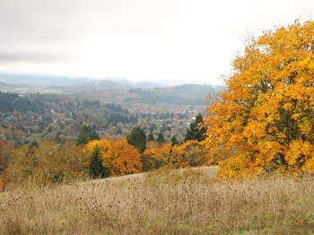

Parks of the City of Corvallis
Where the parks are and what makes them unique.
Park Overview
Living in the Pacific Northwest provides many benefits. Our geographic setting is one that encourages outdoor activity. Fueled by spectacular views, cool weather, and relatively close proximity, many individuals explore the parks and nature areas that are in our local communities. The city of Corvallis is no exception to this theme. The flow of its local rivers in close proximity to the Coast Mountains allows for the creation of some pretty splendid amenities. For a town of less than 60,000 people, the city clearly has an abundance in parks and nature areas with 32.
Instead of highlighting all 32 parks, we will highlight a few of the more popular parks. However, the map to the right does display ALL of the parks. Hovering over the park will display the park's name. Feel free to explore!
Chip Ross Park
Chip Ross Park consist of 125.6 acres and is located on the north side of the city. Chip Ross Park features an easy-to-moderate 1.5 mile trail through lush forest and hilltop habitats of upland prairie and Oak savanna. The park offers beautiful views of Corvallis, the Willamette Valley, the Coast Range and the Cascade Mountains. Hikers and runners can also access the many miles of trails in adjacent McDonald Forest from here.
Horseback riding and bicycling are permitted on seasonally designated trails. The park is a designated off-leash area for dogs and their humans to socialize and enjoy. There are picnic tables at the Lester Ave. trailhead.
Note: Chip Ross Park is currently under a restoration project. While during this period, the park is still open to the public. However, just be aware that there may be ongoing work during your visit.
Avery Park
Avery Park is located on the banks of the Marys River just south of the Oregon State University Campus and consist of 75.3 acres. It features natural areas, sports fields, and five picnic shelters. Any of these shelters, the Thompson, Fire Side, Townsend, Maple Grove and Lions picnic shelters may be reserved for private events and parties. There are several playground structures scattered throughout the park and a one-mile walking/jogging trail winds through the park and along the Marys River riparian area.
The Rose Garden area is a popular feature of Avery Park and Natural Area, with over 250 varieties of Roses, blooming from May to October (full bloom is in June). It makes a lovely backdrop for photographs. The Avery House Nature Center is found in Avery Park, as is the Applegate Trail interpretive kiosk. Avery Park also includes a Rhododendron garden, a compost demonstration area, and an extensive horseshoe pit area that that hosts an annual regional horseshoe tournament.
The Corvallis Parks and Recreation's administrative office is located in Avery Park and Natural Area. Families can sign up for classes and events, reserve a variety of rental facilities, and pick up brochures on city activities in our office, open Monday, Wednesday and Friday from 8 am to 5 pm, and Tuesday and Thursday from 12 noon to 5 pm.
Bald Hill Nature Area
The Bald Hill Nature Area is located on the western edge of Corvallis and consist of 284 acres. This park offers both a moderately level, 1.5 mile multi-modal path along the base of the hill and several miles of dirt and gravel foot trails that circle and climb to the summit of the hill, as well as connect to the Mulkey Creek trail and Fitton Green Natural Area. The trails pass through varied habitats of upland prairie, oak savanna, oak woodlands, riparian areas and wetlands. Wildflowers are plentiful in the spring.
A rustic barn offers guests shade and shelter at the base of the hill. This barn may be reserved for parties and events by completing a Special Use Permit form. Please visit the Parks & Recreation office at 1310 SW Avery Park Drive or call us at 541-766-6918. Horseback riding and bicycling are permitted seasonally on designated trails. Several memorial benches allow guests the opportunity to rest and enjoy the beautiful vistas of nearby farms and the hills beyond. An area near the barn is designated as an off-leash dog area.
Willamette Park
Willamette Park is located on the south side of the city and consist of 287 acres. It features significant natural areas, open meadows and playing fields. The park is best known for its Willamette River views and access, and the Frisbee golf course that winds through the park. The Frisbee golf course is used year-round by Frisbee enthusiasts for practice, exhibitions and tournaments. The course features two basket positions for each hole, which keeps the course challenging for participants and allows the meadows to recover from frequent use.
Another popular feature of Willamette Park and Natural Area is that most of the park is designated as "off-leash" for dogs. Dogs are required to be on leash only in the picnic shelter, play ground and soccer field areas. The park includes the Rotary Shelter at Willamette Park which offers great views of the river and can be reserved for parties and events. There is play structure for young kids and 2 soccer fields that can be reserved for tournaments. Several hiking/jogging trails branch off of a multi-modal path that runs the length of the park. The path connects a nearby neighborhood at one end, and the Crystal Lake Sports Fields and Willamette Boat Landing at the other end. Several of the trails lead down to the river for easy riverside fishing.